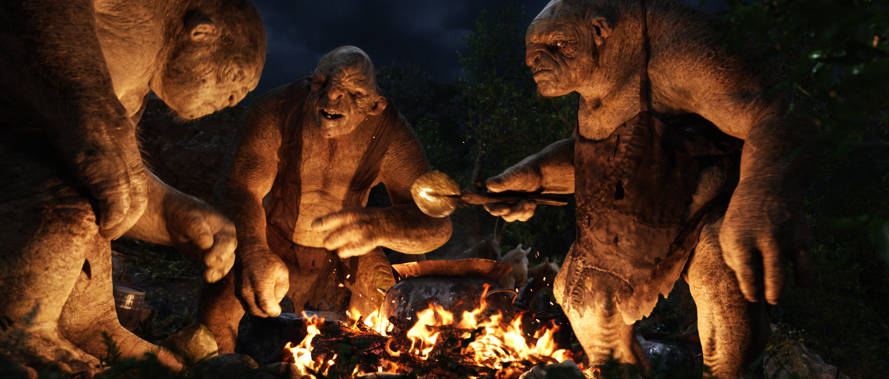
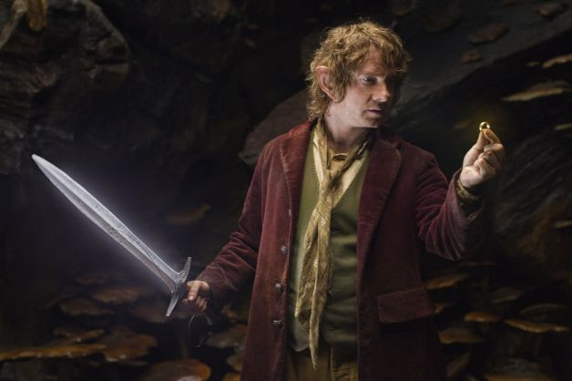

Synopsis
On his eleventy-first (111th) birthday, the Hobbit Bilbo Baggins decides to write down the full story of the adventure he took 60 years before for his nephew Frodo. Bilbo writes about how, prior to his own actual involvement, the Dwarf Thrór becomes king of Erebor and brings an era of prosperity to his kin until the arrival of Smaug the dragon. Drawn by the amount of gold that the Dwarves have amassed, Smaug destroys the nearby town of Dale before driving the Dwarves out of Erebor. Thrór's grandson, Thorin Oakenshield , sees King Thranduil and his Wood-Elves on a nearby hillside and is dismayed to find them taking their leave rather than aiding his people. This makes Thorin grumpy.
Following this, Bilbo is tricked by the wizard Gandalf the Grey into hosting a party for Thorin and his band of Dwarves, which doubles as Bilbo's recruitment as the Dwarves' "burglar" to help them steal their treasure back from Smaug. Bilbo reluctantly joins the company on their journey to the Lonely Mountain . The group gets captured by 3 mountain trolls, but Bilbo is able to stall the trolls from eating them until dawn, when Gandalf saves the company by exposing the trolls to sunlight, turning them into stone. They search the trolls' cave and find treasure and Elven blade. Thorin and Gandalf each take an Elf-wrought blade, Orcrist and Glamdring respectively. Gandalf also finds an Elven short-sword, later to be known as Sting, which he gives to Bilbo. Being Elven blades of the First Era, they glow when near Orcs or Goblins.
The group encounters Radagast the Brown, a wizard who lives in the forest of Greenwood. He tells them of a strange presence he encountered at Dol Guldur and how it is poisoning the forest . The group is then chased by Orcs on Wargs, with Radagast covering their escape. Gandalf leads them through a stone passage to Rivendell as the Wargs and Orcs above are slain by Elven riders. Elrond discloses the map's indication of a secret door that will be visible only on Durin's Day. Gandalf talks with the White Council (Elrond, Galadriel, and Saruman the White) about his involvement with the Dwarves, explaining the presence Radagast encountered and expresses mild suspicion that this necromancer is the Dark Lord . The others are skeptical, believing Sauron to have been defeated forever, and that this necromancer is not a true threat.
Against the Council's wishes, Gandalf sends Bilbo and the Dwarves towards the Misty Mountains. While passing through the mountains, Bilbo and the Dwarves encounter a battle between three stone giants, and are forced to take refuge in a cave. While the company sleeps, Bilbo decides to leave and return to Rivendell after talking to Bofur, who believes in him. But before he can leave they are all captured by Goblins and taken to their leader, the Great Goblin. Gandalf arrives and saves the Dwarves from the Goblins, killing the Great Goblin during their escape. Bilbo is separated from the Dwarves and encounters Gollum, who accidentally drops a mysterious ring while killing a stray Goblin to feed on. Picking up the ring and placing it in his pocket, Bilbo finds himself confronted by Gollum. They play a riddle game, wagering that Bilbo will be shown the way out if he wins, or eaten by Gollum if he loses. After Bilbo wins by asking Gollum what he has in his pocket, Gollum realizes Bilbo has stolen the ring and attacks him. Bilbo discovers the ring grants him invisibility and evades a furious Gollum, following him to find the way out and deciding out of pity not to kill him, despite having the chance to do so.
Bilbo rejoins the group once he sees them, keeping the ring he found secret. The moment of triumph is cut short as they are ambushed by Azog and his hunting party. After taking refuge in cliffside trees before the Wargs uproot most of them, Thorin charges Azog, but is wounded and knocked to the ground. Bilbo defends Thorin from being beheaded, and as Azog's other orcs move in, Fili, Kili, and Dwalin rush in and attack them, and a fight ensues. The group is then saved by eagles, who fly them to safety on the Carrock. Gandalf wakes the unconscious Thorin, who acknowledges Bilbo for his bravery. As the party sees the destiny of their journey, the Lonely Mountain in the distance, Smaug awakens.
